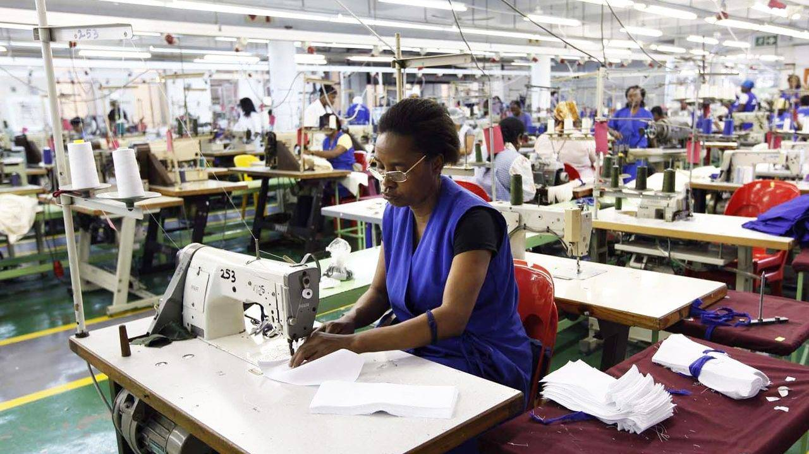

In this section, we will review and analyze how free trade and protectionaism may or may not support economic growth. Free trade boosts global output by letting countries specialize based on comparative advantage—China in electronics, Bangladesh in textiles, Belgium in chocolate. However, gains are uneven. Mali, despite being the lowest-cost cotton producer, struggles due to U.S. subsidies driving prices down. Some argue trade protection can foster economic growth.
Firstly, trade protection measures, such as import tariffs on textiles, may benefit a country like Nigeria. A tariff increases the cost of imported textiles, making locally produced fabrics more price competitive. As a result, domestic textile manufacturers may experience increased demand, leading to higher output and job creation in the industry.
This is particularly crucial for industries with high fixed costs, such as textile production, which requires expensive machinery and large-scale operations. By producing more, firms can lower their cost per unit and benefit from economies of scale. As domestic textile producers expand their operations, they achieve greater efficiency, reducing production costs. This allows them to offer more competitively priced goods, strengthening their position against foreign imports. If these cost reductions are significant enough, Nigeria may eventually phase out tariffs while maintaining a strong domestic industry. On the other hand, free trade provides substantial advantages. By eliminating trade barriers, Nigerian consumers gain access to a wider variety of affordable textile products. Given that textiles are essential to the clothing and fashion industries, lower input costs could enhance Nigeria’s ability to compete in international markets, fostering growth and innovation in related sectors.
A "beggar-thy-neighbour" policy occurs when a country prioritizes its own economic growth at the expense of others. For instance, the U.S. subsidizes its cotton industry, lowering production costs for American farmers and making it harder for African cotton producers to compete. How can countries implement protectionist policies without harming their trading partners?
Protectionist policies may encourage short-term economic growth, but their long-term effects are uncertain. Without competition, domestic firms may lack the incentive to innovate or reduce costs. Protected industries often become inefficient, leading to stagnation rather than growth.
Another argument for protectionism is that tariff revenue can be reinvested into infrastructure, such as roads, ports, and electricity—key drivers of economic growth. Improved infrastructure enables Nigerian businesses to export more efficiently and access larger markets.
But to what extent is this true?
Corruption can divert public funds, limiting the effectiveness of tariff revenue. For example, in Brazil, large-scale infrastructure projects have been delayed or abandoned due to financial mismanagement. Would private investment lead to more efficient infrastructure development?
Additionally, governments often redirect revenue toward urgent expenditures like disaster relief or debt repayment, rather than long-term economic development.
Ultimately, the choice between free trade and trade protection depends on how policies are implemented. While protectionism can support industries in the short term, free trade encourages efficiency, innovation, and long-term economic growth. The challenge lies in finding the right balance.